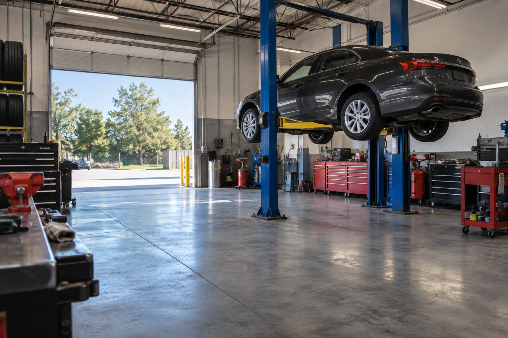

Full service auto repair in Vista since 2014
Convenient Car Care is a full service auto shop servicing all makes and models. Diagnostics, brakes, oil changes, engine and transmission work, with an ASE Master Technician in the bay and a free second opinion on any quote you bring us.
We can pick up your car from home or work and bring it back when it's done. Night drop-off is available too, so you don't have to rearrange your day around a repair.
Got a quote from another shop? Bring it in. We'll take a look for free and match or beat the price on the repair.
4.8 stars on Google (110 reviews), 4.7 on Yelp (104 reviews) and a 100% recommend rate on Facebook. Owner Vilius is the one most reviews thank by name.
Services
From a check-engine light to a full engine rebuild, the shop handles it in-house. Call for a quote, or bring us a quote from somewhere else and we'll take a free second look.
Conventional and synthetic oil changes with a look over the basics while the car is up.
Rotation and inspection to keep wear even and catch problems early.
Routine automotive maintenance on the factory schedule.
Pads, rotors and brake system service.
Check-engine lights and electrical gremlins traced with proper diagnostic equipment.
From misfires and leaks to complete engine rebuilds.
Transmission service, repair and replacement.
Radiator repairs, hoses and overheating problems.
We accept cash, checks and credit or debit cards, and we can email your invoice so you can pay online.
About the shop
Convenient Car Care has been serving the Vista community since 2014 from its shop on South Santa Fe Avenue. Owner Vilius and his crew work on every make and model, and the shop is a NAPA AutoCare Center with an ASE Master Technician on staff.
The name is the whole idea: pick-up and drop-off from your home or work, night drop-off, emailed invoices you can pay online, and a free second opinion on any quote from another shop.
Drivers come in from Vista, Oceanside, Carlsbad, San Marcos, Escondido and Fallbrook, and most of them come back. The shop has been a Carfax Top-Rated Service Center every year since 2021.
Why "Convenient"
Most people can't spend a workday sitting in a waiting room. So we come to you: we'll pick your car up from home or work, do the job, and bring it back. If it's easier, drop it off after hours using our night drop-off.
Reviews
“Vilius was able to fit us in the same day, diagnose the problem, fix it, and also fix an additional exhaust issue that other shops couldn't find.”
“We only trust our Car Care with Vilius and his crew. He never tries to oversell anything and we trust whatever he suggests.”
“They even brought me into the shop to physically show me some things underneath my car. So professional, nice and reasonably priced. 10/10 would recommend to anyone.”
“Everyone here was extremely welcoming, friendly, and did excellent work. I also asked for a list of anything they think I may need to fix/replace in the future.”
“I had a flat tire which I discovered after I got off of work and had my car towed here. Even though it was after hours Vilius didn't hesitate to help repair it.”
Hours & location
| Monday | 8:00 am – 5:00 pm |
|---|---|
| Tuesday | 8:00 am – 5:00 pm |
| Wednesday | 8:00 am – 5:00 pm |
| Thursday | 8:00 am – 5:00 pm |
| Friday | 8:00 am – 5:00 pm |
| Saturday | Closed |
| Sunday | Closed |
Night drop-off available. Serving Vista, Oceanside, Carlsbad, San Marcos, Escondido and Fallbrook.
Convenient Car Care
1850 S Santa Fe Ave, Ste B, Vista, CA 92084
Call (760) 957-4035 or email us to set up a time. Ask about pick-up from home or work.
Call (760) 957-4035